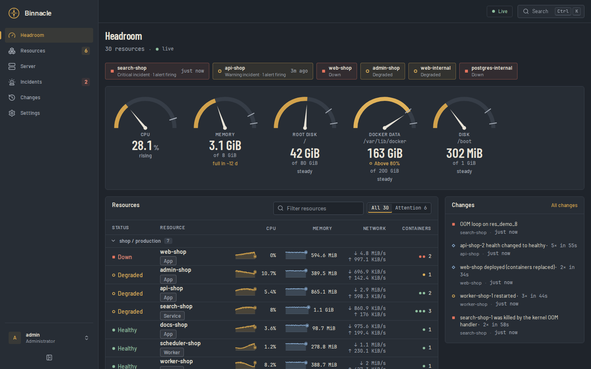
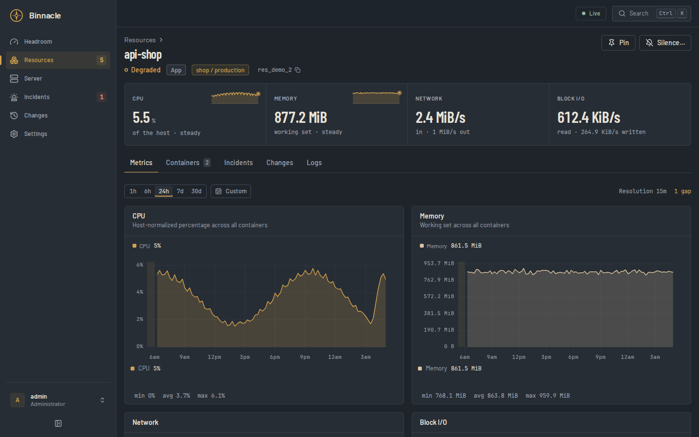
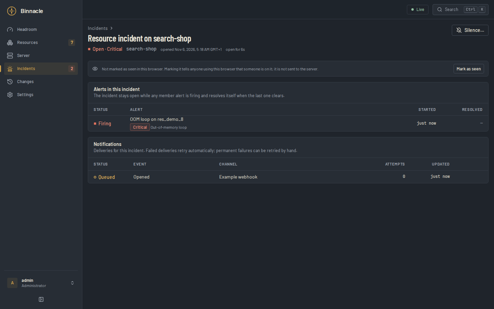
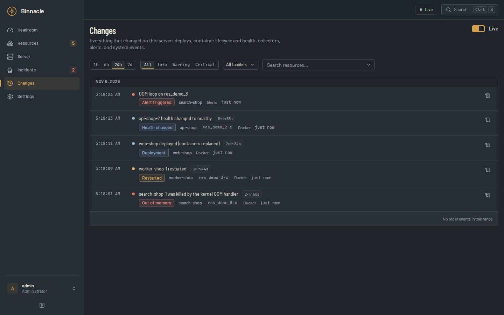

Lightweight, Coolify-aware monitoring for Docker servers
How much room your Docker server has left, and when it runs out.
Binnacle puts a gauge on CPU, memory and every disk, fits a line through the last 24 hours and tells you “full in ~12 d” before a volume fills up. Behind it: your Coolify and Compose services with their containers, HTTP checks, incidents and a log of every deploy, restart and OOM kill. One Go binary and one SQLite file on the server it watches.
v0.6.0 is available for amd64 and arm64 from GHCR with an immutable version tag. AGPL-3.0.

binnacle --demo: 30 synthetic
containers with 24 hours of seeded history.
Measured footprint
- Peak memory, 30 containers
- 74 MiB
- CPU, 30 containers
- 0.5 % of one core
- Live sample interval
- 2 s
- Processes and databases
- 1 + 1
- Telemetry sent
- 0 bytes
Memory and CPU from the 5-minute benchmark on a 4-CPU x86_64 host with 48 hours of history and 8 live browser streams; at 100 containers the peak is 90 MiB. How it is measured
The first screen
Four questions answered in one screen.
-
How full is it?
One arc gauge each for CPU, memory, the root disk, the Docker data root and the fullest other mounts, up to eight. Each arc is a true 0 to 100 scale with your alert thresholds marked on it.
-
Which way is it going?
Every five minutes a least-squares line is fitted to the last 24 hours of each disk and of memory. The gauge says
full in ~N d,steadyorshrinking, and “not enough history” for the first three hours instead of guessing. -
What needs attention?
Open incidents, down and degraded resources and collector problems sit in one row above the gauges. When the live stream stops, the page says so; it never shows “all healthy” without current data.
-
What changed?
Deploys, restarts, OOM kills and health changes stream in as they happen. Repeats fold into one line, such as “restarted · 4× in 1m”.
From the demo
Each service, incident and change gets a page.



Footprint
One binary and one SQLite file with a 1 GiB budget.
The collector, alerting, notifications and the web interface run in one Go process with the frontend embedded. History lives in a single SQLite database on the server, with a 1 GiB budget by default. No Prometheus, no Grafana, no agent per container, no cloud account.
Every queue, query and log view has a limit. A log view keeps the newest 5,000 lines, and an HTTP check reads at most 64 KiB. When something falls behind, Binnacle drops stale work and says so on the page.
| Resolution | Kept for |
|---|---|
| Live, in memory | every 2 s |
| 10 seconds | 48 hours |
| 1 minute | 30 days |
| 15 minutes | 1 year |
The minimal and long-term presets keep 12 hours or 7 days of 10-second samples.
Boundary
Read-only toward Docker, permanently.
Binnacle has no code path that starts, stops, restarts, deletes, execs into or redeploys a container, and no shell or Docker API proxy. The guarantee is written into the product boundaries, and no setting turns it off.
Plain Docker and Compose work without Coolify. On a Coolify server the labels already on your containers name and group them by project and environment.
Fit
Built for one server with a few dozen containers.
Binnacle fits when
- One Linux server runs your containers, with or without Coolify.
- You want history and alerts without running a metrics stack.
- The monitor must not be able to change your workloads.
- You want each service with its containers under it.
Prometheus and Grafana fit when
- You aggregate many servers in one place.
- You need free-form queries and custom dashboards.
- You already operate a metrics stack.
Install
Deploy v0.6.0.
Requirements
Ubuntu 22.04/24.04 or Debian 12/13 · amd64 or arm64 · Docker Engine
29.5.1+ · read access to host /proc,
/sys and Docker · one persistent volume
-
Create a one-time setup token
The first browser session claims the installation with it and creates the administrator.
export BINNACLE_SETUP_TOKEN="$(openssl rand -hex 32)" -
Deploy on Coolify or with Compose
On Coolify, deploy the included service template and attach a domain. Elsewhere, use the Compose file with the host mounts, the Docker socket and a volume for the SQLite database.
-
Pin the version
Use the immutable
Open install guidev0.6.0image tag in production. The guide covers secrets, upgrades and the socket proxy.
To look around first, run make dev-demo in a clone: the
screenshots on this page come from it.
Reference